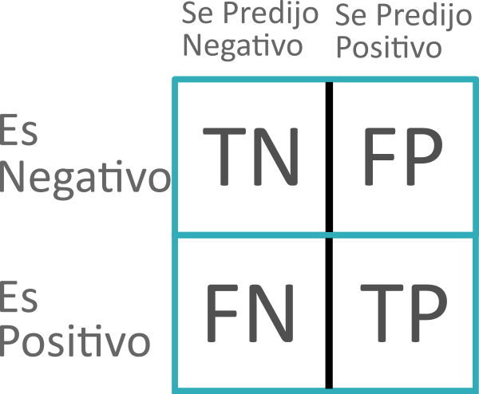

Metrics#
Proporciona funciones para evaluar el rendimiento de modelos, como precisión, recall, F1-score y matrices de confusión. Para importar este módulo o una clase o función específica usar:
# Importar módulo
from sklearn import metrics
# Importar clase específica
from sklearn.metrics import ClassName
# Importar función específica
from sklearn.metrics import func_name
ClassName o func_name es el nombre de la clase o función respectivamente.
Note
Para más información de esta librería visitar la documentación de sklearn.
Clases - Visualización.#
Clases implementadas en el módulo metrics para visualización. Incluye herramientas para visualizar métricas, como curvas ROC, curvas de precisión-recall y matrices de confusión.
Función |
Descripción |
|---|---|
ConfusionMatrixDisplay(confusion_matrix, …) |
Visualización de la matriz de confusión. |
DetCurveDisplay(, …) |
Visualización de la curva DET. |
PrecisionRecallDisplay(precision, recall, …) |
Visualización Precision-Recall. |
Visualización del error de predicción de un modelo de regresión. |
|
RocCurveDisplay(, …) |
Visualización de la curva ROC. |
Funciones#
Funciones implementadas en el módulo metrics. A continuación se presena un pequeño resumen por sección:
Biclustering: Esta sección incluye métricas específicas para evaluar modelos de biclustering, que agrupan filas y columnas simultáneamente.
Clasificación: Contiene métricas para evaluar modelos de clasificación, como precisión, recall, F1-score, matriz de confusión y curva ROC. Estas métricas son esenciales para medir la efectividad de los clasificadores.
Clusters: Proporciona métricas para evaluar algoritmos de clustering, como el índice de silueta, el coeficiente de correlación de Rand ajustado y la homogeneidad. Estas métricas miden la calidad de los agrupamientos.
Distancias: Aquí se describen métricas de distancia utilizadas para medir la similitud o disimilitud entre muestras, como la distancia euclidiana, la distancia de Manhattan y la distancia de coseno. Son útiles en clustering y vecinos más cercanos (KNN).
Interfaz selección de modelo: Herramientas útiles para definir las reglas para evaluar un modelo.
Pares de muestras: Contiene funciones para calcular métricas de similitud o distancia entre pares de muestras, como la matriz de kernel y la matriz de distancias. Estas funciones son útiles en algoritmos que requieren comparaciones por pares.
Ranking multilabel: Esta sección se enfoca en métricas para problemas de clasificación multietiqueta y ranking, como la precisión promedio (average precision) y la pérdida de ranking (ranking loss). Son útiles cuando cada muestra puede tener múltiples etiquetas.
Regresión: Aquí se encuentran métricas para evaluar modelos de regresión, como el error cuadrático medio (MSE), el error absoluto medio (MAE) y el coeficiente de determinación (\(R^2\)). Estas métricas miden la precisión de las predicciones en problemas de regresión.
Biclustering#
Esta sección incluye métricas específicas para evaluar modelos de biclustering, que agrupan filas y columnas simultáneamente.
Función |
Descripción |
|---|---|
consensus_score(a, b, …) |
La similitud de dos conjuntos de biclusters. |
Clasificación#
Contiene métricas para evaluar modelos de clasificación, como precisión, recall, F1-score, matriz de confusión y curva ROC. Estas métricas son esenciales para medir la efectividad de los clasificadores.
Función |
Descripción |
|---|---|
accuracy_score(y_true, y_pred, …) |
Puntuación de la clasificación de accuracy. |
auc(x, y) |
Calcula el área bajo la curva (AUC) utilizando la regla trapezoidal. |
average_precision_score(y_true, y_score, …) |
Calcula la precisión media (AP) a partir de las puntuaciones de las predicciones. |
balanced_accuracy_score(y_true, y_pred, …) |
Calcula el balanced accuracy. |
brier_score_loss(y_true, y_proba=None, …) |
Calcula la pérdida de puntuación Brier. |
class_likelihood_ratios(y_true, y_pred, …) |
Calcula los likelihood ratios positivos y negativos de la clasificación binaria. |
classification_report(y_true, y_pred, …) |
Crea un informe de texto que muestre las principales métricas de clasificación. |
cohen_kappa_score(y1, y2, …) |
Calcula la kappa de Cohen: una estadística que mide la concordancia inter-annotator. |
confusion_matrix(y_true, y_pred, …) |
Calcula la matriz de confusión para evaluar la precisión de una clasificación. |
d2_log_loss_score(y_true, y_pred, …) |
Función de puntuación \(D^2\), fracción de pérdida logarítmica explicada. |
dcg_score(y_true, y_score, …) |
Calcula la ganancia acumulada descontada (Discounted Cumulative Gain). |
det_curve(y_true, y_score, pos_label=None, sample_weight=None) |
Calcula los porcentajes de error para distintos umbrales de probabilidad. |
f1_score(y_true, y_pred, …) |
Calcula la puntuación F1, también conocida como puntuación F equilibrada o medida F. |
fbeta_score(y_true, y_pred, …) |
Calcula la puntuación F-beta. |
hamming_loss(y_true, y_pred, …) |
Calcula la pérdida media de Hamming. |
hinge_loss(y_true, pred_decision, …) |
Pérdida media hinge (no regularizada). |
jaccard_score(y_true, y_pred, …) |
Puntuación del coeficiente de similitud de Jaccard. |
log_loss(y_true, y_pred, …) |
Pérdida logarítmica (log loss), también conocida como pérdida logística o pérdida de entropía cruzada. |
matthews_corrcoef(y_true, y_pred, …) |
Calcula el coeficiente de correlación de Matthews (CCM). |
multilabel_confusion_matrix(y_true, y_pred, …) |
Calcula una matriz de confusión para cada clase o muestra. |
ndcg_score(y_true, y_score, …) |
Calcula la ganancia acumulada descontada normalizada (Normalized Discounted Cumulative Gain). |
precision_recall_curve(y_true, y_score=None, …) |
Calcula los pares precision-recall para diferentes thresholds de probabilidad. |
precision_recall_fscore_support(y_true, y_pred, …) |
Calcula la precisión, recall, la medida F y el soporte para cada clase. |
precision_score(y_true, y_pred, …) |
Calcula la precisión. |
recall_score(y_true, y_pred, …) |
Calcula el recall. |
roc_auc_score(y_true, y_score, …) |
Calcula el área bajo la curva ROC (Receiver Operating Characteristic Curve) a partir de las puntuaciones de predicción. |
roc_curve(y_true, y_score, …) |
Calcula la característica operativa del receptor (ROC). |
top_k_accuracy_score(y_true, y_score, …) |
Puntuación de clasificación Top-k Accuracy. |
zero_one_loss(y_true, y_pred, …) |
Pérdida de clasificación cero-uno. |
Notas de accuracy_score#
accuracy_score: Proporción entre las predicciones correctas y las predicciones totales. Toma un valor entre 1 y 0, entre más alto mejor. No es un buen score en dataset no balanceados.
# Sintaxis de llamada
accuracy_score(y_true, y_pred, *, normalize=True, sample_weight=None)
Parámetros:
y_true -
array-like: Valores del target reales. También puede ser y_test.y_pred -
array-like: Valores del target estimados.normalize -
bool: Para indicar que se retorne el número de muestras correctamente clasificadas en lugar de la proporción.sample_weight -
array-like: Ponderaciones de las muestras.
Notas de classification_report#
classification_report: Devuelve un reporte que muestra las principales métricas de clasificación (precision, recall y f1-score) además de support que básicamente indica el número de samples en cada etiqueta.
# Sintaxis de llamada
classification_report(y_true, y_pred, *, labels=None, target_names=None, sample_weight=None,
digits=2, output_dict=False, zero_division='warn')
Parámetros:
y_true -
array-like: Valores del target reales.y_pred -
array-like: Valores del target estimados.
Notas de confusion_matrix#
{kind=link}

confusion_matrix: Calcula la matriz de confusión para evaluar la precisión de una clasificación.
# Sintaxis de llamada
confusion_matrix(y_true, y_pred, *, labels=None, sample_weight=None, normalize=None)
Parámetros:
y_true -
array-like: Valores del target reales.y_pred -
array-like: Valores del target estimados.labels -
array-like: Lista de etiquetas para indexar la matriz. Por default es0, 1, donde 0 esFalsey 1 esTrue, IMPORTATE: Si se modifica este atributo el output será diferente, por default el de la imagen que se muestra anteriormente.sample_weight -
array-like: Ponderaciones de las muestras.normalize - {‘true’, ‘pred’, ‘all’}: Normaliza la matriz sobre los valores verdaderos (filas), valores estimados (columnas) o todas.
En el caso de dos variables se puede extraer los valores de la siguiente manera:
tn, fp, fn, tp = confusion_matrix(y_true, y_pred).ravel()
Donde:tn: true negatives.
fp: false positives.
fn: false ngatives.
tp: true positives.
Retorna:
ndarray.
Notas de classification_report#
roc_auc_score: Calcula el área bajo la curva ROC. Entre más grande mejor el modelo.
# Sintaxis de llamada
roc_auc_score(y_true, y_score, *, average='macro', sample_weight=None, max_fpr=None,
multi_class='raise', labels=None)
Parámetros:
y_true -
ndarray: Etiquetas binarias reales.y_score -
ndarray: Scores del target, podrían ser probabilidades estimadas de cada clase (método.predict_proba()), medidas del non-thresholds (del método.decision_function()). Si es con.predict_proba()se debe pasar solo la columna con las probabilidades de la clase 1, es decir,X.predict_proba(X_test)[:, 1].
Retorna:
ndarray.
Notas de roc_auc_score#
roc_auc_score: : Calcula el área bajo la curva ROC.
# Sintaxis de llamada
roc_auc_score(y_true, y_score, *, average='macro', sample_weight=None, max_fpr=None, multi_class='raise',
labels=None)
Parámetros:
y_true -
ndarray: Etiquetas binarias reales.y_score -
ndarray: Scores del target:Caso binario: Podrían ser probabilidades estimadas de cada clase (método
.predict_proba(), evaluado en X_new y seleccionando únicamente la primer columna:: X.predict_proba(X_test)[:, 1]o medidas del non-thresholds (del método.decision_function()).Otros casos revisar documentación.
Retorna:
ndarray.
Notas de roc_curve#
roc_curve: Calcula el receiver operating characteristic (ROC). Se utiliza estricatamente en tareas de clasificación binaria. Para gráficar se utiliza fpr en el eje x y tpr en el eje y.
# Sintaxis de llamada
roc_curve(y_true, y_score, *, pos_label=None, sample_weight=None, drop_intermediate=True)
Parámetros:
y_true -
ndarray: Etiquetas binarias reales. Si las etiquetas no son -1 y 1 o 0 y 1 entonces se deben de indicar explícitamente en pos_label.y_score -
ndarray: Scores del target, podrían ser probabilidades estimadas de cada clase (método.predict_proba()), medidas del non-thresholds (del método.decision_function()). Si es con.predict_proba()se debe pasar solo la columna con las probabilidades de la clase 1, es decir,X.predict_proba(X_test)[:, 1].
Retorna:
fpr:
ndarray.tpr:
ndarray.thresholds:
ndarray.
Uso básico:
# Importar función
from sklearn.metrics import roc_curve
# Usando probabilidades
y_pred_prob = est.predict_proba(X_test)[:,1]
fpr, tpr, thresholds = roc_curve(y_test, y_pred_prob)
# Graficar
plt.plot([0, 1], [0, 1], 'k--')
plt.plot(fpr, tpr)
plt.xlabel('False Positive Rate')
plt.ylabel('True Positive Rate')
plt.title('ROC Curve')
plt.show()
Una clasificación binaria podría ser regresión logística.
Clusters#
Proporciona métricas para evaluar algoritmos de clustering, como el índice de silueta, el coeficiente de correlación de Rand ajustado y la homogeneidad. Estas métricas miden la calidad de los agrupamientos.
Función |
Descripción |
|---|---|
adjusted_mutual_info_score(labels_true, labels_pred, …) |
Información mutua ajustada entre dos clusters. |
adjusted_rand_score(labels_true, labels_pred) |
Índice Rand ajustado al azar. |
calinski_harabasz_score(X, labels) |
Calcula la puntuación de Calinski y Harabasz. |
cluster.contingency_matrix(labels_true, labels_pred, …) |
Construye una matriz de contingencia que describe la relación entre las etiquetas. |
cluster.pair_confusion_matrix(labels_true, labels_pred) |
Matriz de confusión de pares resultante de dos clusters. |
completeness_score(labels_true, labels_pred) |
Calcula la métrica de integridad de un etiquetado de clusters dada una verdad básica. |
davies_bouldin_score(X, labels) |
Calcula la puntuación de Davies-Bouldin. |
fowlkes_mallows_score(labels_true, labels_pred, …) |
Mide la similitud de dos clusters de un conjunto de puntos. |
homogeneity_completeness_v_measure(labels_true, labels_pred, …) |
Calcula las puntuaciones de homogeneidad, exhaustividad y V-Measure. |
homogeneity_score(labels_true, labels_pred) |
Métrica de homogeneidad de un etiquetado de clusters dada una verdad básica. |
mutual_info_score(labels_true, labels_pred, …) |
Información mutua entre dos clusters. |
normalized_mutual_info_score(labels_true, labels_pred, …) |
Información mutua normalizada entre dos clusters. |
rand_score(labels_true, labels_pred) |
Índice Rand. |
silhouette_samples(X, labels, …) |
Calcula el coeficiente de silueta de cada muestra. |
silhouette_score(X, labels, …) |
Calcula el coeficiente de silueta medio de todas las muestras. |
v_measure_score(labels_true, labels_pred, …) |
Etiquetado de clusters con medida V dada una verdad básica. |
Distancias#
Aquí se describen métricas de distancia utilizadas para medir la similitud o disimilitud entre muestras, como la distancia euclidiana, la distancia de Manhattan y la distancia de coseno. Son útiles en clustering y vecinos más cercanos (KNN).
Función |
Descripción |
|---|---|
Interfaz uniforme para funciones métricas de distancia rápidas (euclidiana, la distancia de Manhattan, entre otras). |
Interfaz selección de modelo#
Herramientas útiles para definir las reglas para evaluar un modelo.
Función |
Descripción |
|---|---|
check_scoring(estimator=None, scoring=None, …) |
Determina el métrico a partir de las opciones del usuario. |
get_scorer(scoring) |
Retorna un métrico de cadena. |
Obtiene los nombres de todos los metricos disponibles. |
|
make_scorer(score_func, …) |
Crea un métrico a partir de una métrica de rendimiento o una función de pérdida. |
Pares de muestas#
Contiene funciones para calcular métricas de similitud o distancia entre pares de muestras, como la matriz de kernel y la matriz de distancias. Estas funciones son útiles en algoritmos que requieren comparaciones por pares.
Caution
Las métricas aquí presentadas son del módulo pairwise.
Función |
Descripción |
|---|---|
pairwise.additive_chi2_kernel(X, Y=None) |
Calcula el kernel chi-cuadrado aditivo entre las observaciones en X y Y. |
pairwise.chi2_kernel(X, Y=None, gamma=1.0) |
Calcula el kernel exponencial chi-cuadrado entre X y Y. |
pairwise.cosine_distances(X, Y=None) |
Calcula la distancia coseno entre las muestras en X y Y. |
pairwise.cosine_similarity(X, Y=None, dense_output=True) |
Calcula la similitud coseno entre las muestras en X y Y. |
Métricas válidas para pairwise_distances. |
|
pairwise.euclidean_distances(X, Y=None, …) |
Calcula la matriz de distancia entre cada par de una matriz de vectores X y Y. |
pairwise.haversine_distances(X, Y=None) |
Calcula la distancia Haversine entre las muestras en X y Y. |
Métricas válidas para pairwise_kernels. |
|
pairwise.laplacian_kernel(X, Y=None, gamma=None) |
Calcula el kernel laplaciano entre X y Y. |
pairwise.linear_kernel(X, Y=None, dense_output=True) |
Calcula el kernel lineal entre X y Y. |
pairwise.manhattan_distances(X, Y=None) |
Calcula las distancias L1 entre los vectores en X y Y. |
pairwise.nan_euclidean_distances(X, Y=None, …) |
Calcula las distancias euclidianas en presencia de valores perdidos. |
Calcula las distancias coseno emparejadas entre X y Y. |
|
pairwise.paired_distances(X, Y, …) |
Calcula las distancias emparejadas entre X y Y. |
Calcula las distancias euclídeas emparejadas entre X y Y. |
|
Calcula las distancias L1 emparejadas entre X y Y. |
|
pairwise.pairwise_kernels(X, Y=None, metric=’linear’, …) |
Calcula el kernel entre las matrices X y la matriz opcional Y. |
pairwise.polynomial_kernel(X, Y=None, degree=3, gamma=None, coef0=1) |
Calcula el kernel polinómico entre X y Y. |
pairwise.rbf_kernel(X, Y=None, gamma=None) |
Calcula el kernel rbf (gaussiano) entre X y Y. |
pairwise.sigmoid_kernel(X, Y=None, gamma=None, coef0=1) |
Calcula el kernel sigmoide entre X y Y. |
pairwise_distances(X, Y=None, metric=’euclidean’, …) |
Calcula la matriz de distancias a partir de una matriz de vectores X y Y opcional. |
pairwise_distances_argmin(X, Y, …) |
Calcula distancias mínimas entre un punto y un conjunto de puntos. |
pairwise_distances_argmin_min(X, Y, …) |
Calcula distancias mínimas entre un punto y un conjunto de puntos. |
pairwise_distances_chunked(X, Y=None, …) |
Genera una matriz de distancia trozo a trozo con reducción opcional. |
Ranking multilabel#
Esta sección se enfoca en métricas para problemas de clasificación multietiqueta y ranking, como la precisión promedio (average precision) y la pérdida de ranking (ranking loss). Son útiles cuando cada muestra puede tener múltiples etiquetas.
Función |
Descripción |
|---|---|
coverage_error(y_true, y_score, …) |
Medida del error de cobertura. |
label_ranking_average_precision_score(y_true, y_score, …) |
Calcula la precisión media basada en la clasificación. |
label_ranking_loss(y_true, y_score, …) |
Calcula el ranking de la medida de pérdida. |
Regresión#
Aquí se encuentran métricas para evaluar modelos de regresión, como el error cuadrático medio (MSE), el error absoluto medio (MAE) y el coeficiente de determinación (R²). Estas métricas miden la precisión de las predicciones en problemas de regresión.
Función |
Descripción |
|---|---|
d2_absolute_error_score(y_true, y_pred, …) |
\(D^2\) función de puntuación de regresión, fracción del error absoluto explicado. |
d2_pinball_score(y_true, y_pred, …) |
\(D^2\) función de puntuación de regresión, fracción de pérdida de pinball explicada. |
d2_tweedie_score(y_true, y_pred, …) |
\(D^2\) función de puntuación de regresión, fracción de desviación de Tweedie explicada. |
explained_variance_score(y_true, y_pred, …) |
Función de puntuación de regresión de la varianza explicada. |
max_error(y_true, y_pred) |
Calcula el error residual máximo. |
mean_absolute_error(y_true, y_pred, …) |
Error absoluto medio de pérdida por regresión. |
mean_absolute_percentage_error(y_true, y_pred, …) |
Porcentaje medio de error absoluto (MAPE) de pérdida por regresión. |
mean_gamma_deviance(y_true, y_pred, …) |
Pérdida por regresión de desviación Gamma media. |
mean_pinball_loss(y_true, y_pred, …) |
Pérdida de pinball para la regresión cuantílica. |
mean_poisson_deviance(y_true, y_pred, …) |
Pérdida por regresión de la desviación media de Poisson. |
mean_squared_error(y_true, y_pred, …) |
Pérdida por regresión del error cuadrático medio. |
mean_squared_log_error(y_true, y_pred, …) |
Pérdida por regresión del error logarítmico cuadrático medio. |
mean_tweedie_deviance(y_true, y_pred, …) |
Pérdida por regresión de la desviación media de Tweedie. |
median_absolute_error(y_true, y_pred, …) |
Pérdida por regresión del error absoluto medio. |
r2_score(y_true, y_pred, …) |
\(R^2\) (coeficiente de determinación) función de puntuación de regresión. |
root_mean_squared_error(y_true, y_pred, …) |
Pérdida por regresión del error cuadrático medio. |
root_mean_squared_log_error(y_true, y_pred, …) |
Pérdida por regresión del error logarítmico cuadrático medio. |
Notas de mean_squared_error#
mean_squared_error: Calcula el MSE (promedio del cuadrado de las diferencias entre las valores reales y las prediciones) de un modelo de regresión. Entre más pequeño mejor (en relación con la escala de los datos).
# Sintaxis de llamada
mean_squared_error(y_true, y_pred, *, sample_weight=None, multioutput='uniform_average')
Parámetros:
y_true -
array-like: Valores del target reales. También puede ser y_test.y_pred -
array-like: Valores del target estimados.sample_weight -
array-like: Ponderaciones de las muestras.